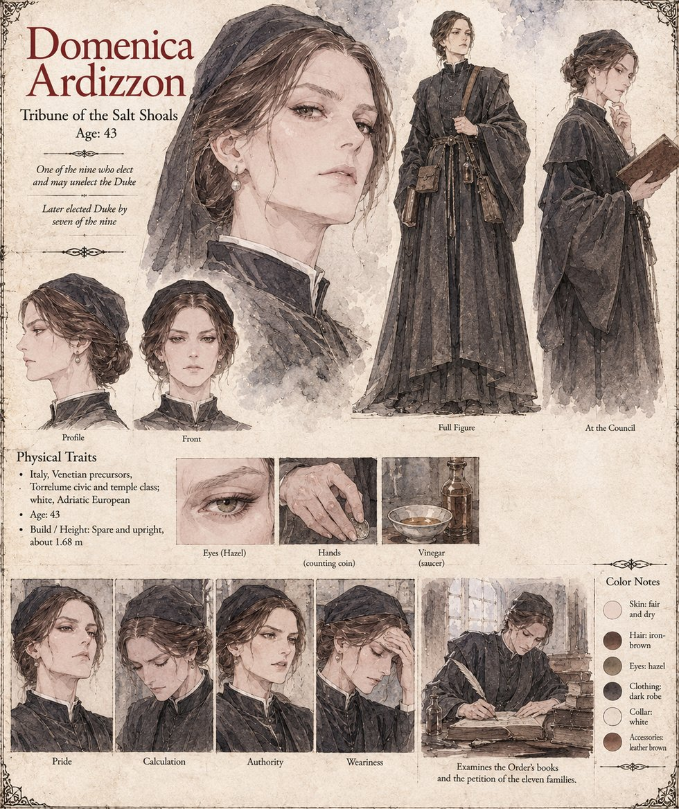

Domenica Ardizzon
Tribune of the Salt Shoals, one of the nine who elect and may unelect the Duke · later elected Duke by seven of the nine · keeper of bees · 43 at the start, 70 at her death
A spare, brisk, dry woman of forty-three, Tribune of the Salt Shoals, with a merchant’s eye and a merchant’s dislike of any sum she has not personally checked, correct about money for twenty years without expecting thanks. She keeps a hive of bees on the roof of her house in Torrelume and has never told the Council, who would have found it charming. In the second week of Ferren the Council sends her up the river to look into a petition from eleven families of the lagoon, kin of a drover’s boy, a gleaner and nine Listeners whose estates the Order has reclaimed as unlit. She carries the Ordinance of Translation, a bottle of very good vinegar and a fixed intention not to be edified. At the ford she pays two soldi, counts her change, finds it a half-soldo short and corrects the ferry-master, who goes the color of a boiled ham; she decides that the ferry-dog Soldo is the most honest member of the valley. In three days in the parish office she finds the Order’s books impeccable, the most suspicious thing she could have found.
On the second day she walks out to the Field with the petition’s eleven names and asks the sexton how many mounds answer to them; he stops at six, the turf too shallow and too undisturbed by half, and to each question gives the same small answer, There is a name. She leaves the exchange out of her précis to the Council. On the fourth evening she asks Agata whether every counting-house does not keep two books, the second being the true one. Told It began as my brother’s, she says I am going to use this, copies the book overnight and sends it back with the jar of shells and a second receipt. Before she sleeps she writes three lines to a captain at Merlara who charges by the hour of darkness, asking his summer rate for four thousand men who did not mind the Order. In the third week of Garren she reads her précis to the Council of Nine Shoals, which votes six to three to suspend the Reclamation; the High Pontiff condemns the book as the Heresy of the Second Ledger, and the Interdict follows. She watches the Lamp-Host march from the window of the Chamber of Salt with a saucer of her own vinegar going cold. It is a very fine thing to see, says the youngest Tribune; It is a very expensive one, she says.
She drafts the contract with Captain Corbelli herself, paying the Company by the hour between the first lamp and the first cock. She brings the Pontiff’s second instrument up the river in her satchel and reads it aloud to Agata in the room above the ferry-house: it strikes her from the roll and voids every certification, including the requisition for four hundred barrels, the first occasion on which she had known the Order to be thorough in anyone’s favor. Then she lays down the Council’s shorter sheet, appointing Agata its Reckoner for Focolare, and answers Agata’s It is a heading with Then fill it. At the Concord she holds the single tallow dip for the Pontiff to sign by, her hand bandaged from a quarrel with a hive and steady throughout. She is elected Duke in the spring by seven of the nine and unelected under the fourth clause eleven years later when the salt-tax falls short, which she had predicted and did not dispute, and dies at seventy in her bed in Torrelume, with bees on the roof; the Council, which finds this charming, puts it in her eulogy.
The manuscript gives her age (forty-three), her spare, brisk, dry bearing, the satchel, the vinegar, the bees and her death at seventy; it gives no height, hair, eye colour or dress. The sheet’s upright build of about 1.68 m, hazel eyes, iron-brown hair, long dark robe, pearl drop earring and dark cap are its own, as are its panels Pride, Calculation, Authority and Weariness, its view At the Council and its scene Examines the Order’s books and the petition of the eleven families. Its age and its two italic lines (one of the nine who elect and may unelect the Duke; later elected Duke by seven of the nine) follow the manuscript.
“I am going to use this.”